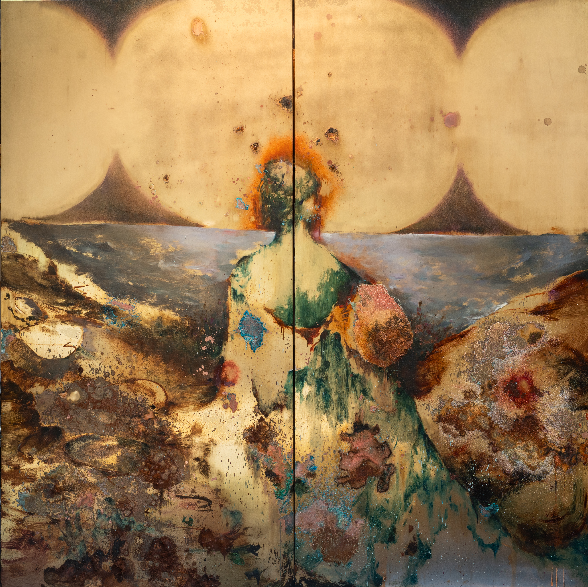

← Acid Drifted—Brass Surface Home

Daylight Constellation / 白日见星
The work is created on a brass panel using oil paint, mixed media, and chemical reactions. It continues my ongoing exploration of brass as a painting medium. Through oxidation, corrosion, sedimentation, and layers of pigment, the image emerges through an interaction between painted intervention and the material transformation of the metal itself. The central human figure is surrounded by geological forms, traces of corrosion, and unstable material surfaces, while three celestial-like forms above shift the scale of perception from the human toward the planetary and cosmic.
Daylight Constellation considers how we might understand our own position when human civilisation is no longer placed at the centre of the world, but instead situated within material, planetary, and non-human timescales. Influenced by ideas of planetary realism and non-human agency, the work attends to the agency of matter, environment, and time themselves. Brass does not function here simply as a passive support for an image. Chemical processes continue to alter its colour, texture, and reflectivity, allowing the work to remain in a state of gradual transformation even after it is considered complete.
The title Daylight Constellation emerges from an imagination of visibility and invisibility: celestial bodies do not disappear in daylight, but are temporarily obscured by the conditions of human perception. The work uses this idea to point toward a world that is always present yet frequently overlooked within human experience, creating a tension between the relatively brief timescale of civilisation and the far longer durations of matter and planetary existence.